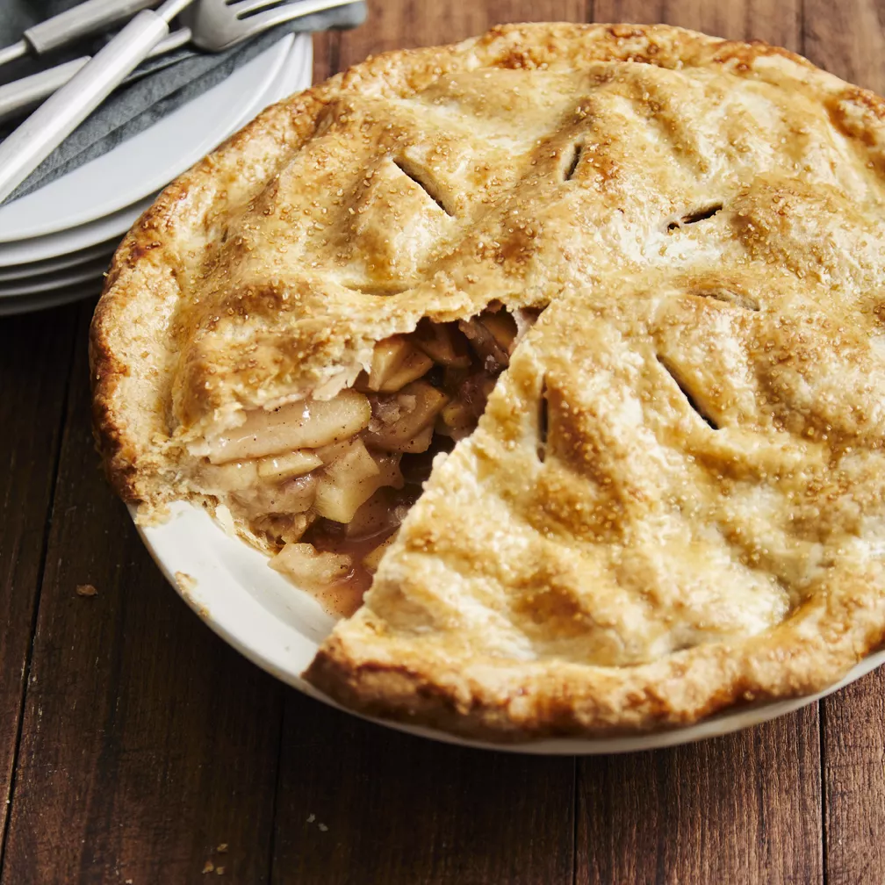

Salted Caramel Apple Pie

Description
This salted caramel apple pie has everything you'd want
out of an apple pie: a buttery, flaky crust; a spiced apple
filling; and a sweet, salty caramel sauce that team up to provide
a perfect combination of flavors and textures in every bite. Serve
à la mode with a side of vanilla bean ice cream.
Ingredients
For the crust
- all-purpose flour
- kosher salt
- unsalted butter
- water
For the sauce
- fine sea salt
- heavy whipping cream
- salted butter
- white sugar
For the filling
- nutmeg
- ground cloves
- kosher salt
- cinnamon
- lemon juice
- all-purpose flour
- white sugar
- Granny Smith apples
For the topping
Steps
- Make the dough: Whisk the flour and salt, then work in the butter. Stir in the water. Transfer the dough to
a work surface and knead until it's smooth. Divide the dough into two discs, wrap in storage wrap, and chill each half in plastic wrap.
- Make the sauce:Heat the sugar until it's melted and amber in color. Add the butter,
then add the cream. Remove from the heat and add the salt. Let cool.
- Make the filling:Stir the filling ingredients until well-combined. Let it sit for
about 30 minutes, then pour it through a strainer into a large bowl. Thicken the liquid on the stove. Allow the liquid to cool to room temperature, then stir it into the apple mixture.
- Roll the dough:Turn each dough disc out onto a lightly floured surface. Roll them out
into 12-inch circles.
- Assemble the pie:Press one of the dough halves into a pie pan. Add the filling, then
top with ½ of the caramel sauce. Place the remaining dough circle over top and crimp the edge.
Brush the top with a beaten egg, sprinkle with
- Bake the pie:Place the pie on a baking sheet. Bake at 400 degrees F until the top is
light golden brown, then reduce the heat to 375 degrees and continue baking until the top is a deep golden brown. Serve with the remaining caramel sauce.